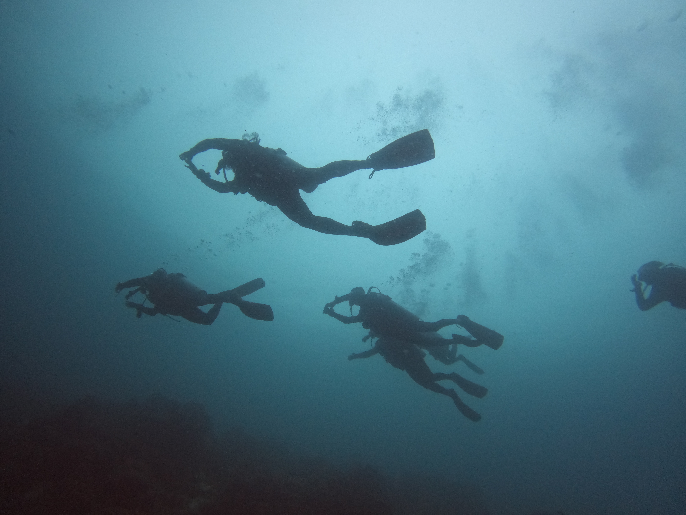

STRENGTH · 내가 잘하는 것
자료조사 및 수집, 경청
필요한 정보를 체계적으로 조사·수집하여 정리하고, 상대방의 이야기를 깊이 경청하며 핵심을 파악합니다.
“저는 낭만을 추구하는 육군 통신장교입니다.”
정보보호를 전공하고 현재 육군 통신중대장으로 임무를 수행하고 있는 라따뚜의 공간입니다. AI를 활용한 정보보호 전문가를 향한 여정과, 여행·스쿠버다이빙에서 찾은 낭만을 깔끔하고 창의적인 시선으로 기록합니다.
첫 화면 대표 이미지 자리
나를 가장 잘 보여주는 사진(군복 프로필 또는 여행·스쿠버다이빙 사진)을 배치할 공간입니다.
맡은 임무를 책임감 있게 수행하는 통신장교이자, 바다와 여행을 사랑하며 AI 시대의 정보보호를 연구하는 사람입니다.
“저는 낭만을 추구하는 육군 통신장교입니다.”
지금 무엇을 하고 있나요? (전공·업무·생활의 중심)
정보보호를 전공하고 통신장교로 임관하여 현재 통신중대장으로 임무수행 중입니다.
무엇을 좋아하고 어떤 분야에 관심 있나요?
여행과 스쿠버다이빙을 통해 일상의 낭만을 추구하며, 직무와 관련하여 정보보호와 AI 분야에 깊은 관심을 가지고 있습니다.
앞으로 어떤 일을 해보고 싶나요?
전공 지식과 지휘·실무 경험을 바탕으로 AI를 활용한 정보보호 전문가로 나아가고자 합니다.
증명사진 자리표시자
단정하고 신뢰감을 주는 증명사진 또는 정복/군복 프로필 사진을 넣을 자리입니다.

여행 및 취미 사진 자리표시자
낭만을 추구하는 일상을 보여주는 여행지 풍경이나 취미 활동 사진을 넣을 자리입니다.
STRENGTH · 내가 잘하는 것
필요한 정보를 체계적으로 조사·수집하여 정리하고, 상대방의 이야기를 깊이 경청하며 핵심을 파악합니다.
FAVORITE · 내가 좋아하는 것
새로운 곳으로 떠나는 여행과 바닷속 세상을 탐험하는 스쿠버다이빙을 통해 삶의 활력과 낭만을 채웁니다.
LEARNING · 요즘 배우고 있는 것
빠르게 변화하는 기술 환경 속에서 AI를 실무와 정보보호 분야에 효과적으로 접목하는 방법을 배우고 있습니다.
사이버보안 실무 점검을 수행한 무기체계 시험평가 경험과, 새로운 세상에 도전한 스쿠버 다이빙 기록입니다.
미사일 방호체계 관련 사진 자리
무기체계 시험평가 및 사이버보안 점검 활동을 상징하는 사진을 배치할 공간입니다.
2024년 LIG넥스원 대전지사에서 신규 도입되는 무기체계의 사이버보안 분야 점검을 직접 수행하며 무기체계 도입 절차를 체득했습니다.
스쿠버 다이빙 사진 자리
세부·보홀의 바다에서 어드밴스드 자격증을 취득하며 촬영한 수중 사진을 배치할 공간입니다.
2024년 12월 필리핀 세부와 보홀에서 어드밴스드(Advanced) 자격증을 취득하며, 물속에서 펼쳐지는 새로운 세상을 경험했습니다.
정보보호와 AI, 또는 여행과 스쿠버다이빙에 대한 이야기를 나누고 싶다면 언제든 환영합니다.